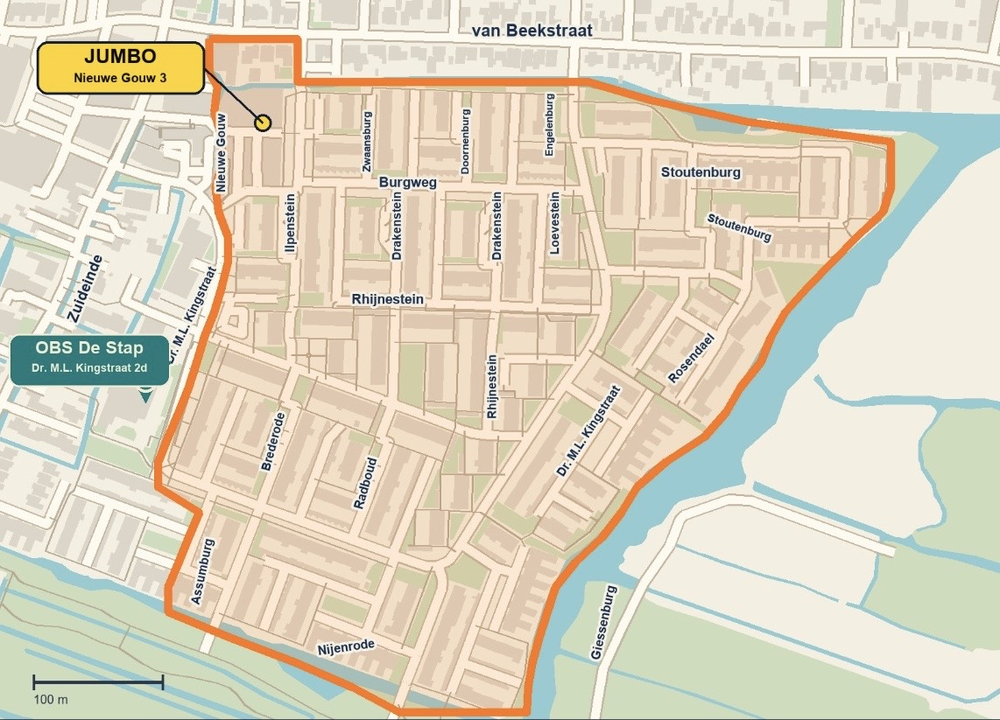

Het Griezelhuisjes tocht gebied
Het gebied waar de tocht zal plaatsvinden is de wijk 'Havenzathe' in Landsmeer. Dit is tevens ook de plek waar we op zoek zijn naar huizen die mee willen doen. Woon jij in de wijk 'Havenzathe' en wil je mee doen met een geweldig versierd griezel huis? Dan zijn wij op zoek naar jou!

Veel gestelde vragen
Contact
Voor verdere vragen kan je ons altijd mailen op: LandsmeerHalloween@gmail.com
Hopelijk tot snel!
Het Spooky Team
Lana, Kim, Linda, Deborah en Kristina